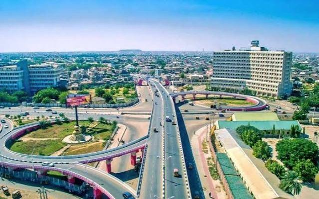

Unity Santana Sunday
About Me
Hello! My name is Unity Santana Sunday. I am from Nigeria, and I enjoy learning, serving others, and discovering new ways to grow personally and professionally. My educational journey has taught me the value of persistence, purposeful growth, and being willing to learn new things.
My Interest in Technology
I am developing my skills in HTML, CSS, JavaScript, and web development. Through WDD 131, I look forward to strengthening my ability to create useful, accessible, and responsive websites.
Explore my learning and development:
My Home: Nigeria
Nigeria is my home country in West Africa. It is known for its cultural diversity, many languages, rich traditions, and beautiful natural landscapes. I come from Akwa Ibom State in the South-South region of Nigeria, an area known for its greenery, waterways, and vibrant communities.

Growth and Discovery
I believe that learning opens doors to new opportunities. Through my studies and experiences, I hope to combine technology, leadership, and problem-solving to make a meaningful contribution wherever I serve.